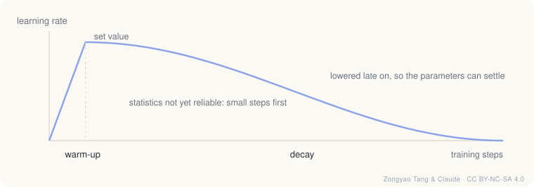

The thread: in real training the single most influential setting is the learning rate, and it is usually not one fixed number → the learning rate is tied to the batch size, which matters a lot in multi-GPU training → a few other common settings each guard against one specific ailment → how training is going has to be read from the loss curves → finally, an order of checks that misses nothing. The later systems units ask "does it run fast"; this unit asks "does it train correctly". The two kinds of problem often show up together, and you need to tell them apart.
Part 1 · Principles of deep learning1.3 Training in practice, and diagnosis
Translated by AI (Anthropic's Claude) from the Chinese edition. The Chinese original is the reference.
This unit answersA model that will not train, blows up, or trains slowly: what causes each? How do you see it in the curves?
Follows 1.2: with the principles of losses and optimizers known, this unit looks at how they go wrong in real training and how to diagnose it.
- The learning rate is the most important knob: warm up first, then decay
- Batch size and learning rate are tied together
- Weight decay, dropout, gradient clipping: each guards against one specific ailment
- Reading loss curves: two lines, training and validation, and a few typical shapes
- The order of debugging: start at the smallest scale, and first make the model overfit one batch
Explanation
1The learning rate is the most important knob: warm up first, then decay
The learning rate decides how far each step goes along the gradient. Too large, and the loss oscillates or even diverges; too small, and it falls extremely slowly. In real training it is not a fixed number: for the first few hundred to few thousand steps it rises from near zero to its set value (warm-up), and after that it gradually falls (decay).
1.2 described one step of gradient descent: parameters ← parameters − learning rate × gradient. The gradient is only accurate near the current position; go too far and it no longer points downhill.
Too large. Every step overshoots the valley floor and lands on the opposite slope. At best the loss oscillates and will not come down; at worst it jumps higher and higher until the loss is infinite or NaN. This is divergence.
Too small. The direction is right, but each step moves only a little. The loss falls, just too slowly to be worth the wait.
Why warm up. At the very start of training two things are special:
- The parameters are randomly initialised, far from any reasonable solution; gradients are large, and their sizes differ enormously between layers.
- Adam estimates how big a step each parameter should take from running averages of its gradient (1.2). In the first few steps that estimate rests on one or two samples and is very unreliable.
A normal-sized learning rate at this point can easily take one step into a very bad place, from which it takes a long time to recover, if it recovers at all. Warm-up means taking small steps until the statistics have settled. Transformers are especially sensitive to this, and almost every training configuration includes warm-up.
Why decay. Every step of stochastic gradient descent is noisy (each batch's gradient is different). With a fixed learning rate, the parameters keep wobbling around the optimum, by an amount proportional to the learning rate. Lowering the learning rate late in training shrinks the wobble, so they can settle. A common way is to decay from the set value to near zero along a cosine curve.

A common schedule: warm up linearly to the set value, then decay along a cosine curve to near zero How to choose the set value. There is no formula. A practical way is to try a few values on a logarithmic scale (say three or ten times apart), run each for a short while, and look at the loss curves: choose the one that "falls fastest without oscillating", then go a little smaller for safety. Other people's configurations can be a starting point, but note the batch size they go with (next card).
Recognising learning-rate problems in the curve.
- The loss shoots up or becomes NaN right at the start: too large, or no warm-up.
- The loss falls but with large jagged teeth and occasional spikes: on the large side.
- The loss is almost a straight, slowly falling line: on the small side.
- It falls normally at first, then sits at one level with a slight jitter: time to decay.
An analogyLike driving down an unfamiliar mountain road: at first you do not know the road and drive slowly; once you know it you speed up; near the destination you look for a parking spot and slow down again.
So when tuning a training run, tune the learning rate first. Its effect on the result is usually larger than all the other hyperparameters together; and the right value changes with model size, batch size and optimizer, so it cannot be copied.
- The previous card said someone else's learning rate cannot be copied as it is. One main reason is here.
2Batch size and learning rate are tied together
The larger the batch, the less noisy the gradient and the closer it is to the "true" direction, so larger steps are safe. As a rule of thumb, a batch k times larger allows a learning rate nearly k times larger (with a longer warm-up). Conversely, change the batch without touching the learning rate and the training behaves differently.
What a batch gives you. A batch's gradient is the average of its samples' gradients. The samples are drawn at random, so this average is a noisy estimate of "the gradient over all the data". The larger the batch, the more noise is averaged away.
The effect on step size. When noise is high, the direction of a single step is unreliable, so the learning rate must be small and many small steps average the noise out. With less noise, the same reliability allows larger steps. A rough but widely used rule is "linear scaling": multiply the batch by k, multiply the learning rate by k. Chapter 6 of UDL (Understanding Deep Learning) notes that the behaviour of stochastic gradient descent depends mainly on "the ratio of learning rate to batch size", which is the same point.
The rule has limits:
- It stops holding for very large batches. The learning rate cannot grow without bound; past a certain value it diverges, and that ceiling does not depend on the batch.
- With a larger learning rate, warm-up must be longer, or the start is more likely to go wrong.
- For adaptive optimizers like Adam the relationship is less strictly linear, and square-root scaling is sometimes more suitable.
So it is a starting point; after scaling you still have to watch the curves.
A large batch is not free. To process the same amount of data, a batch k times larger means k times fewer parameter updates. If the learning rate can grow to match, each step goes further, overall progress is the same, and each step is more efficient on the hardware (0.2). If it cannot, you take fewer steps of the same length and training gets worse. That is why "the bigger the batch the better" is false.
In multi-GPU training. As 7.1 explains, data parallelism on N GPUs is equivalent to a batch N times larger. So adding GPUs leaves two choices:
- Keep each GPU's batch: the effective batch becomes N times larger, throughput is highest, but the learning rate and warm-up need retuning.
- Shrink each GPU's batch to 1/N: the effective batch is unchanged, training behaves as on one GPU and needs no retuning; but each GPU may be underfed and throughput suffers.
The first is the usual choice. So if you move a training run tuned on one GPU to several and find "the loss falls more slowly than before", do not suspect the distributed implementation first: most likely the learning rate was not adjusted to the effective batch.
Gradient accumulation. When memory is too small for a larger batch, compute the gradients of several small batches in a row, add them up, then update once (1.1: gradients accumulate). The effect equals one large batch, and the learning rate is set as for the large batch.
An analogyLike asking for directions: ask one person and the direction they point may be off, so you dare not go far before asking again; ask a hundred people and take the majority, and the direction is far more reliable, so you can walk further in one go.
So multi-GPU training is not just "faster". As 7.1 explains, 8 GPUs are equivalent to an 8 times larger batch. Leave the learning rate unchanged and you are using a learning rate too small for this batch, throwing away the benefit of the large batch.
- Besides the learning rate, a few settings appear in almost every training configuration. Be clear what each is for.
3Weight decay, dropout, gradient clipping: each guards against one specific ailment
Weight decay pulls the parameters slightly towards zero at every step, so they do not grow large enough to memorise the training data. Dropout randomly switches off some neurons during training, so the network does not lean too hard on a few paths. Gradient clipping scales the gradient down whenever its overall size exceeds a threshold, so an occasional huge gradient cannot throw training off in a single step.
Weight decay. 1.2 covered overfitting: the model memorises details of the training data and does badly on data it has not seen. Memorising details often needs some very large weights, which make the output react sharply to tiny changes of the input. At each update, weight decay additionally multiplies every weight by a number slightly below 1 (say 0.9999). Weights that are not continually "supported" by the gradient slowly shrink. The model ends up preferring smoother functions.
Mathematically it is equivalent to adding "the sum of the squares of all weights" to the loss (L2 regularisation), and for plain gradient descent the two are identical. For Adam they differ: added to the loss, this term's gradient is distorted by Adam's adaptive step sizes. AdamW takes the decay out of the gradient and applies it to the weights directly. Transformers today are almost all trained with AdamW.
Dropout. During training, at every step, the outputs of a random fraction of neurons (say 10%) are set to zero; at evaluation all are kept. The network cannot count on any one neuron being present and is forced to spread information over many paths. The effect is like training many slightly different networks at once and averaging them.
When to use it: when data is scarce relative to the model and overfitting is likely. In large-scale pretraining with enormous amounts of data, the model has not even fitted the training set yet, overfitting is not the main problem, and dropout is often set to 0.
Gradient clipping. Now and then training meets a very steep spot on the loss surface, where one batch's gradient is tens or hundreds of times larger than usual. A step along that gradient flings the parameters far away, and all previous progress is lost. Clipping works like this: compute the length (norm) of the gradients of all parameters taken together; if it exceeds a threshold (1.0 is common), scale the whole gradient down until it equals the threshold. The direction is unchanged; only the size of the step is limited.
It is an insurance policy that does nothing most of the time. Record the gradient norm before clipping at every step and plot it; the curve itself is very useful diagnostic information:
- Steady with occasional spikes: normal; clipping acts at the spikes.
- Pinned at the threshold for long stretches: clipping almost every step, which amounts to a lower learning rate. The learning rate may be too large, or the model itself unstable.
- Growing and growing: training is heading for divergence.
- Approaching zero: vanishing gradients, or it has converged.
How to tell overfitting. Look at the two loss curves, on the training set and the validation set (next card). If both fall together, there is no overfitting and no need for stronger regularisation; only when training loss keeps falling and validation loss starts rising is it overfitting.
An analogyLike three protections for riding a bike: weight decay is a speed limit that keeps you from riding ever harder; dropout is practising with one eye covered in turn, so you do not rely on a single sense; gradient clipping is the brake that keeps you in control on a sudden steep descent.
So these settings are not decorations that "can't hurt". Each corresponds to a symptom: the first two treat overfitting, gradient clipping treats instability. Added without the symptom, they only make training slower or worse.
- The settings are covered. Once training is running, how do you know whether it is going well?
4Reading loss curves: two lines, training and validation, and a few typical shapes
Plot the loss on the training set and the loss on the validation set in one chart. Both high and not falling: it is not learning. Training low and validation high, with the gap widening: overfitting. A sudden shoot to very high values or NaN: divergence. Flat for a long time: a plateau. Each shape points to different causes.
First prepare two sets of data. The training set updates the parameters. The validation set is a small part held back from the same source and not used for training; every so often compute the loss on it (under
no_grad, 2.2). It stands for "data not seen before".Know where the start should be. Before training, the model's outputs are close to random. For a classification problem with V classes (for a language model, V is the vocabulary size), the cross-entropy loss of random guessing is ln V. GPT-2's vocabulary has about 50,000 entries, so its initial loss should be around 10.8. If the first step's loss is far above this, initialisation is wrong; far below, something in the data is leaking (the model sees the labels directly, say). Karpathy stresses this check again and again; it takes seconds.
Some shapes.
Shape Meaning Check first Both lines stay near the starting value Not learning Is the learning rate too small; do gradients flow back; do data and labels match Both fall steadily together, close to each other Normal, and not trained enough yet Keep training, or make the model larger Training keeps falling, validation flattens then rises Overfitting More data, stronger regularisation, early stopping Shoots up or becomes NaN right at the start Divergence Learning rate too large, no warm-up, numerical problems A sudden spike mid-training, then recovery An unusual batch or a steep spot Is gradient clipping working; the data in that batch Falls to some level and stays flat for a long time A plateau Should the learning rate decay; has the model reached its capacity Validation is lower than training The two sets differ in distribution, or the effect of dropout How the data was split A few easy misreadings.
- *Noise.* The training loss is computed once per batch and jitters by itself. Smooth it to see the trend (average the last several steps). But smoothing hides spikes, so look at both the raw and the smoothed curve.
- *The x-axis.* When comparing two experiments, be clear whether the x-axis is "steps", "samples processed" or "time". For two runs with different batch sizes, comparing by steps and by samples can lead to opposite conclusions. When system performance is the concern (0.2), only time on the x-axis makes sense.
- *Periodic waves.* Regular ups and downs of the loss every fixed number of steps usually mean the data was not shuffled well and samples of one kind are clumped together.
The loss is not all there is. What you finally care about is the task metric (accuracy, quality of generation). Sometimes the loss falls and the metric does not move. As 0.2 said, a complete record has four things: throughput, MFU, peak memory and model quality; this card is about how to read the fourth.
An analogyLike two readings in a medical check-up that must be read together: one normal reading on its own says little; their relationship is what tells cases apart.
So always hold back validation data during training, and record both curves. With only the training loss, you can neither spot overfitting nor tell "the model is weak" from "the data is wrong".
Builds on Weight decay, dropout, gradient clipping: each guards against one specific ailmentThe loss function is not made up: it comes from maximum likelihoodA low training error does not mean the model has learned: look at data it has not seen- The curves tell you "something is wrong". Finding where needs an order that does not rely on luck.
5The order of debugging: start at the smallest scale, and first make the model overfit one batch
When training misbehaves, do not guess at full scale. Shrink the problem to the smallest: take one batch and train on it again and again. A correct model and training loop should drive this one batch's loss close to zero within a few hundred steps. If it cannot, the code has a bug; if it can, scale up step by step, adding one thing at a time.
Bugs in neural networks differ from bugs in ordinary programs: they rarely crash with an error; more often the model quietly learns a little worse. A preprocessing step done wrong, labels shifted by one place, a layer whose gradients do not flow back: the program runs to the end as usual, just with poor results. So you need a set of deliberate checks, each verifying one thing. The order below follows the approach of Karpathy's well-known post.
One: look at the data first. Print a few samples, including their final form just before they enter the model (after all preprocessing). Confirm inputs and labels match. A great many problems are found right here.
Two: check the initial loss. As in the previous card: it should be close to ln V.
Three: overfit one batch. Fix one batch, switch off dropout and data augmentation, and train on it again and again.
- The loss falls smoothly to near zero: the model can express it, gradients reach every layer, the optimizer works, and the loss function matches the labels.
- It will not fall: one of those links is broken. Common ones: some parameters were never given to the optimizer; a step accidentally cut the computation graph (detach, 2.2); labels and predictions were matched along the wrong dimension; the learning rate is off by orders of magnitude.
This step also gives you the "throughput ceiling" from 0.2: feeding the same batch again and again has no data-loading cost. One test checks both correctness and performance.
Four: scale up to a small part of the data. Say 1% of it. Now training loss should go very low and validation loss be clearly higher: overfitting. This shows the validation process works.
Five: the full data, then regularisation. Only now do you care about generalisation: add dropout, weight decay, data augmentation, and tune the learning-rate schedule.
Six: speed comes last. Mixed precision, compilation, multiple GPUs. After each one is added, compare: the loss curve should lie almost on top of the one before.
Keep "does it train correctly" apart from "does it run fast". This is the interface between this unit and all the systems units after it. A symptom can often have a cause on either side:
- The loss falls more slowly after moving to several GPUs: perhaps the effective batch changed and the learning rate was not adjusted (this unit), perhaps the gradient synchronisation is implemented wrongly (7.1).
- NaN appears after turning on mixed precision: perhaps a numerical overflow (2.6), perhaps the learning rate was already on the edge of divergence.
- Results change after turning on compilation: first switch compilation off and confirm eager execution is correct (2.5).
The principle is the same as in 0.2: change one thing at a time, and compare with the baseline after each change. Only here the baseline is the loss curve rather than throughput.
Troubleshooting: finding the cause when the loss becomes NaN
Once a NaN appears it spreads: anything computed with it is NaN, and one step later every parameter is NaN. So what you are after is where it appears first.
First, when does it appear?
- NaN at the very first step: most likely the input data already contains NaN or infinity, or initialisation or the model's structure has an obvious numerical problem (division by zero, the log of zero or of a negative number).
- After running a while, with the loss oscillating upwards before: divergence. The learning rate is too large, or there is no warm-up or gradient clipping.
- After a long and normal run, suddenly: some special batch triggered a numerical problem, or a value overflowed under mixed precision.
Locate the operation.
torch.autograd.set_detect_anomaly(True)
With this on, as soon as a node in the backward pass produces NaN, an error is raised and the line of code that created this node in the forward pass is printed. It slows training down a lot; turn it on only while hunting.
You can also add checks of your own at key points:
assert torch.isfinite(loss), f"loss is not finite, step={step}"(Note that this is a synchronisation point, 3.6; that does not matter while hunting, but remove it or check less often afterwards.)
Some common sources.
log(0),0/0,sqrtof a number slightly below zero (caused by rounding error). Add a tiny number to the denominator or to the argument of the log.expof a large number. Use the framework's softmax and cross-entropy, which guard against overflow inside (4.4 explains the subtract-the-maximum trick).- An attention mask that masks out an entire row, so the softmax's denominator is zero.
- Mixed precision: overflow in 16 bits. Move the suspicious part back to 32 bits (2.6).
- Data: a sample that is empty or contains abnormal values. Save the batch from the step where it went wrong and feed it to the model on its own to reproduce.
Keep the curve of the gradient norm (mentioned above with gradient clipping). Many "sudden" NaNs were foreshadowed on that curve: it had been climbing for hundreds of steps before things broke.
An analogyLike fixing a string of lights that will not come on: do not fiddle with the whole string; first test one bulb on its own, then two, then a section, and which step breaks it is plain to see.
So "overfit one batch" is the smoke test for training code, and should be the first thing done with any new model. It takes minutes and rules out more than half the bugs, which in full-scale training would take hours of running to show up.
Putting it together
The learning rate warms up first, then decays. It moves in proportion with the batch size; multi-GPU training changes the effective batch, and the learning rate must follow. Weight decay prevents overfitting; gradient clipping keeps a single step from throwing training off. The shapes of the training and validation loss curves tell you whether it is underfitting, overfitting or diverging. Debug from the smallest scale: first make the model overfit one batch.
Test yourself
Without looking back at the explanation, say it in your own words.
- Why does the learning rate warm up and then decay? What do the loss curves look like when it is too large, and when it is too small?
- Why does a change of batch size usually call for a change of learning rate? What does this mean for multi-GPU training?
- What problem does each of weight decay, dropout and gradient clipping solve? How do you decide whether to use them?
- What typical shapes do the training and validation loss curves take? What does each indicate?
- What does the "make the model overfit one batch" test check? When training goes wrong, what order of checks is recommended?